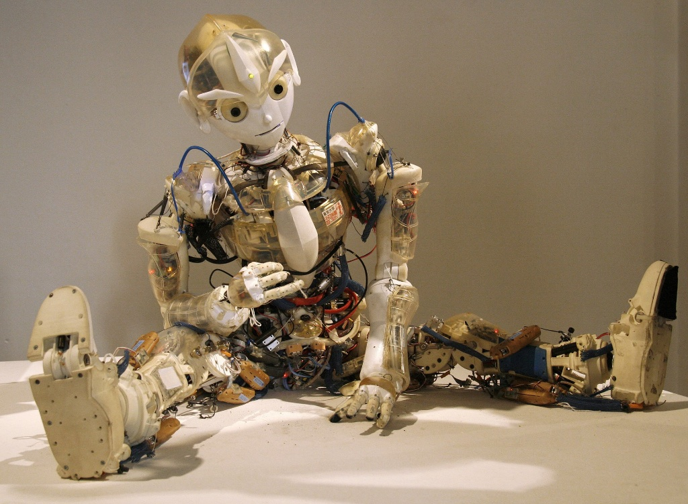
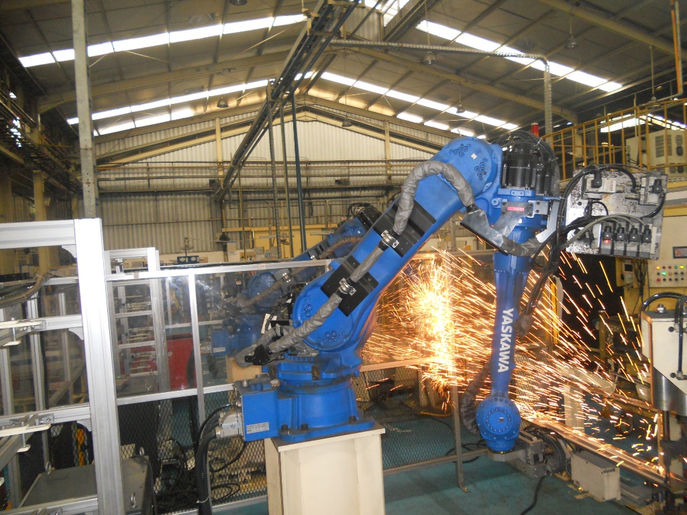
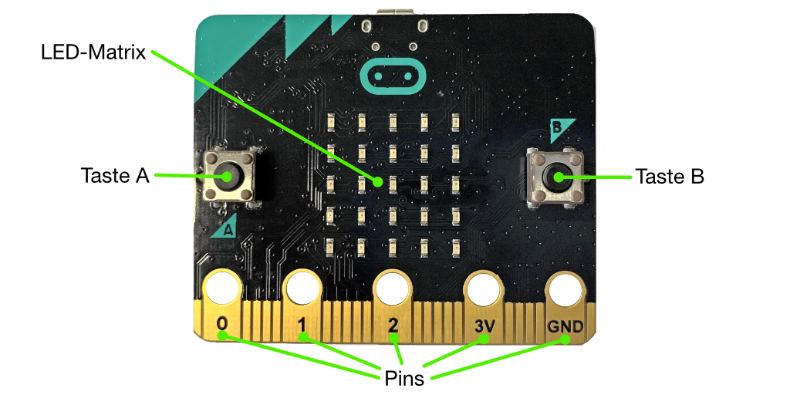
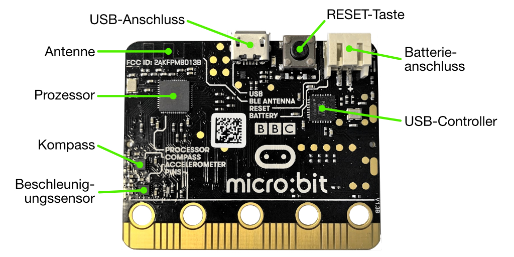
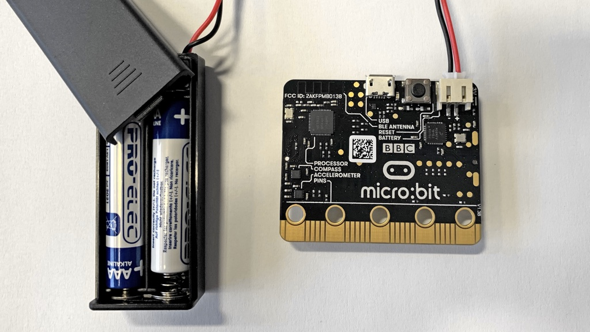

BBC micro:bit
Unser Leben wird heute zu einem beträchtlichen Teil von Automaten gesteuert. Sie regeln die Ampel an der Kreuzung, waschen für uns die Wäsche oder versenden Nachrichten an unsere Kollegen und Kolleginnen. Manche dieser Automaten können sich selber bewegen,
zum Beispiel Bleche aufheben, präzise positionieren und zusammenschweissen, oder sie fliegen herum, filmen oder führen Krieg. Solche Bewegungsautomaten nennt man Roboter. Dre Begriff stammt vom Tschechischen Wort
robota ab, was so viel wie "Frondienst" oder "Zwangsarbeit" bedeutet.
Daneben gibt es Computerprogramme, die ganz ähnlich wie Roboter bestimmte Aufgaben erfüllen, wie z.B. Emails versenden, die sich aber nicht selber bewegen können.
Sie werden Bots genannt, eine Kurzform für Roboter. Tatsächlich haben sich die Aufgabenfelder, in denen Roboter und Bots eingesetzt werden, in den letzten Jahren rasant entwickelt, und so wird sich auch die Bedeutung dieser Begriffe sicher mit
der Zeit erweitern.
|  |  |
Abb. 1 – Ein humanoider Roboter und ein Industrieroboter. (Bild links: Manfred Werner / Wikimedia Commons, Bild rechts: Ptmetindoerasakti / Wikimedia Commons)
Trotz ihrer immensen Bedeutung wissen nur wenige Menschen, wie diese digitalen Automaten funktionieren. Das Ziel von diesem Kursteil ist es, hinter die Kulissen von Ampeln, Waschmaschinen, Handys und Co. zu blicken, um etwas über deren Funktionsweise zu lernen. Dazu verwenden wir einen kleinen Computer, der micro:bit heisst. Er wurde 2015 von der BBC (British Broadcasting Corporation) entwickelt. Vom Aufbau her gleicht er einem Mobiltelefon. Im Folgenden werden die einzelnen Teile des micro:bit genauer erklärt.
Vorderseite
Auf der Vorderseite hat der micro:bit einen kleinen Bildschirm mit 5x5 roten Leuchtdioden (Light Emitting Diode, kurz LED), siehe Abb. 1. Die LED's sind einfarbig und leuchten entweder rot oder gar nicht. Moderne Handys haben Bildschirme mit mehr als einer Million LED's und können in verschiedenen Farben leuchten. Bei den meisten Handys kann der Bildschirm Berührungen (touch) erkennen. Der micro:bit hat nur zwei Tasten A und B, die gedrückt werden können, die 25 LED's sind nicht empfindlich auf Berührungen.

Abb. 2 – micro:bit Vorderseite (Bild: T. Jenni)
Unten befinden sich 5 goldene Anschlüsse mit Loch (Pins) an welche man Sensoren und auch Motoren anschliessen kann. Die Pins 0, 1 und 2 können vom micro:bit direkt angesteuert werden. Der Pin 3V ist liegt auf einer Spannung von 3.3 V und kann als Stromversorgung für weitere Sensoren und Motoren genutzt werden. Der Pin GND nennt man Ground (Boden) er wird als Rückleiter verwendet. Ein Stromkreis braucht immer einen Hin- und einen Rückleiter. Alle angeschlossenen Bauelemente müssen ein gemeinsames Ground (Boden) haben, sonst gehts nicht.
Rückseite
Auf der Rückseite, Abb. 2, befindet sich das Gehirn (Prozessor) des micro:bit. Von aussen sieht man nur ein schwarzes flaches Kästchen. Im Innern ist dieser Prozessor jedoch sehr komplex und enthält viele tausende Schaltelemente, die kompliziert zusammengeschaltet sind. Der Prozessor arbeitet Programme ab, die auf den micro:bit geladen wurden.
Weiter hat es auf der Rückseite einen RESET-Taster um den micro:bit neu zu starten, einen USB-Anschluss um Programme auf den micro:bit zu laden und einen Anschluss für die Batterie. Hat man das Programm auf den micro:bit geladen, kann man ihn vom Computer trennen und anschliessend mit zwei Batterien betreiben, siehe Abb. 3.

Abb. 3 – Rückseite des micro:bit. (Bild: T. Jenni)
Genau so wie die meisten Handys, kann der micro:bit feststellen, ob er bewegt wird und wo unten ist. Er benutzt dazu einen Beschleunigungssensor (Accelerometer). Wird der micro:bit auf einen Tisch gelegt, kann der Beschleunigungssensor messen mit welcher Seite er auf dem Tisch liegt.
Wie aus dem Geografieunterricht bekannt ist, hat die Erde ein Magnetfeld. Der micro:bit kann mit dem Magnetfeldsensor (Kompass) messen in welche Richtung das Erdmagnetfeld zeigt und so ermitteln wo Norden ist. Das ist praktisch, wenn man den micro:bit zur Navigation verwenden möchte.
Oben links befindet sich eine Bluetooth Antenne (BLE Antenna). Mit dieser Antenne kann der micro:bit Daten an andere Geräte (micro:bit, Handy, Computer) senden. BLE steht für Bluetooth Low Energy. Bluetooth ist ein spezieller Funkstandard für Geräte wie externe Lautsprecher, Kopfhörere, usw. und Low Energy bedeutet, dass die Funkübertragung nicht viel Batterie (Energie) benötigt.

Abb. 4 – Stromversorgung des micro:bit Computers mit Hilfe von Batterien. (Bild: T. Jenni)
Auf der nächsten Seite wird erklärt, wie du den micro:bit programmieren kannst.
Links
Autoren: T. Jenni, Dr. U. Leisinger
Letzte Änderung: 14. Mai 2021

Einsteigerkurs für den BBC micro:bit von T. Jenni, et al. ist lizenziert unter einer Creative Commons Namensnennung - Nicht-kommerziell - Weitergabe unter gleichen Bedingungen 4.0 International Lizenz.